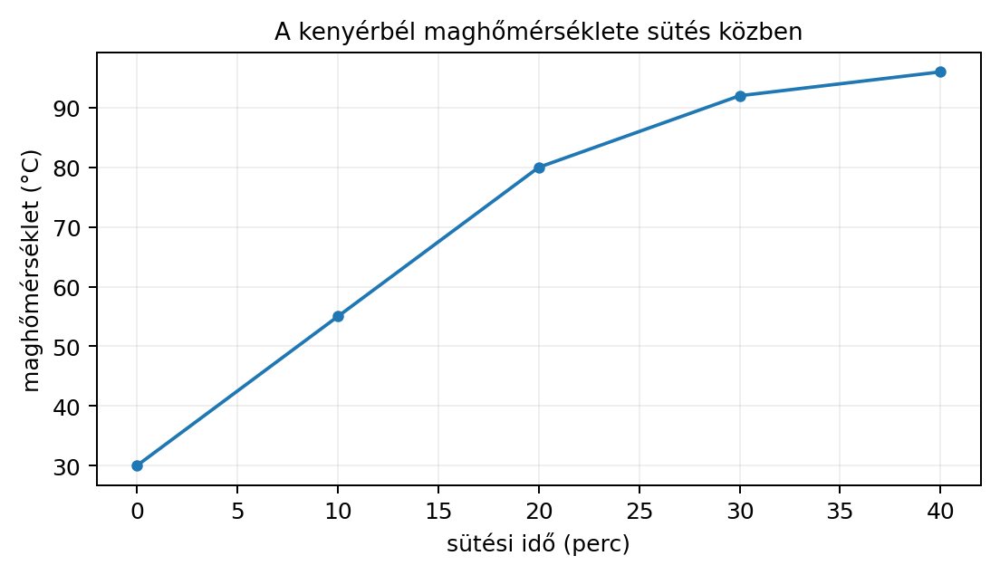

Miközben a hajnali műszakban a pék a megkelt kenyereket a forró kemence elé gördíti, egy pillanatra megáll, és ellenőrzi a tészták felületét. A tészta még halvány, rugalmas, ragasztani valóan puha. Néhány perc múlva ugyanez a tészta a kemencében megduzzad, majd fokozatosan aranybarna, ropogós héjú kenyérré alakul. Ez a látványos átalakulás a sütés. Nem elég azonban csak „forró helyre tenni” a tésztát: a péknek értenie kell, mi történik a bélzetben, miért nő meg hirtelen a tészta, és miért nem szabad túl korán kivenni a terméket.
Definíció. A sütés az a hőkezelő művelet, amelyben a megkelt, megformázott tésztadarabot forró kemencében, meghatározott hőmérsékleten, páratartalom mellett és ideig hevítjük, hogy a tészta szerkezete megszilárduljon, felülete megbarnuljon, íze, illata és emészthetősége kialakuljon. A sütés során a nyers tészta késztermékké válik.
A sütés célja tehát nem egyszerűen a víz elpárologtatása, hanem négy együttes cél:
Feltételek. Ahhoz, hogy a sütés céljai teljesüljenek, a következő feltételeket kell biztosítani:
Higiénia. A sütés során a nyers tészta és a késztermék közötti keresztszennyeződés elkerülése érdekében a pék keze, a vetőlapát és a sütőfelületek ne érintkezzenek nyers tésztával, majd anélkül, hogy tisztítanák őket, késztermékkel. A sütés közben használt eszközöknél is érvényes a jó higiéniai gyakorlat.
A kemencében a hő három fizikai módon jut el a tésztadarabhoz. A péknek akkor is érdemes ezeket ismernie, ha nem fizikusként dolgozik: a sütési hibák egy része abból adódik, hogy a három mód aránya nem megfelelő.
Definíció. Hővezetés (kondukció): a hőátadás szilárd anyagban vagy két érintkező test között, molekuláról molekulára terjedő energiaátadással. Pékségi példa: a kenyér alja a forró sütőlemezen vagy kemencealjzaton keresztül melegszik; a tészta belsejében is hővezetéssel halad a hő a meleg felület felől a hidegebb mag felé.
Definíció. Hőáramlás (konvekció): a hőátadás áramló közeg – levegő, vízgőz vagy forró levegő-gőz keverék – segítségével. Pékségi példa: légkeveréses kemencében a ventilátor által mozgatott forró levegő körbejárja a termékeket, és a felületüket melegíti.
Definíció. Hősugárzás (radiáció): a hőátadás elektromágneses hullámok, elsősorban infravörös sugárzás formájában, közvetítő közeg nélkül. Pékségi példa: a kemence fűtött fala, boltozata vagy az infrasugárzó fűtőelem a termék felé sugározza a hőt; a sütőtér felületei akkor is melegítik a tésztát, ha a levegő éppen nem áramlik.
A gyakorlati kemencékben mindhárom mód egyidejűleg jelen van, de az adott kemencetípus és beállítás határozza meg az arányt. A kőaljzatú kemencében erős a hővezetés az aljzat felől és erős a hősugárzás a boltozat felől, míg a légkeveréses kemencében a hőáramlás szerepe nagyobb.
Definíció. A maghőmérséklet a termék geometriai közepén vagy annak a pontján mért hőmérséklet, amely a leglassabban melegszik fel. A kenyérnél ez gyakorlatilag a bélzet középpontja.
A sütés során a tésztadarab felülete gyorsan felmelegszik, a bélzet maghőmérséklete azonban fokozatosan követi. A következő ábra egy tipikus, szemléltető maghőmérséklet-görbét mutat.

A görbe jól mutatja a bélzet lassú melegedését. A vetéskor a tészta maghőmérséklete a kelesztés utáni hőmérséklet, például 30 °C. Az első 10 percben a maghőmérséklet még csak 55 °C körül van, miközben a felület már sokkal forróbb. A 20. perc körül a bélzet 80 °C, a 30. percben 92 °C. Ezután a hőmérséklet már alig emelkedik, a görbe ellaposodik. Ennek oka: a bélzetben lévő víz elpárolog, és a párolgási hő elvonja az energiát; a bélzet hőmérséklete ezért nem tudja tartósan meghaladni a víz forráspontját, a gyakorlatban legfeljebb 96–98 °C körül mozog (ellenőrizendő: termék- és kemencetípusfüggő).
A sütés alatt a bélzetben nem egyetlen, hanem egymásra épülő folyamatsor zajlik. A folyamatok hőmérsékletfüggők, ezért a maghőmérséklet emelkedése határozza meg a sorrendet.
A következő ábra a fenti maghőmérséklet-görbét és az alább részletezett hat folyamat hőmérsékleti tartományát egymás mellé teszi. A sávok mellett az is olvasható, hogy a görbe szerint körülbelül hányadik percben lépi át a mag a tartomány alsó és felső határát: a kemencerugás és a gáztágulás a 12. percig tart, a csirizesedés a 12. és a 20. perc között zajlik, a 92 °C-ot a mag a 30. perc körül éri el (ez még csak az átsültségi zóna előszobája; az elősütött termék elősütési határa lehet), a kenyér átsültségi határát (legalább 96 °C, tanulási példa) a 40. perc körül.
A tartományok átfednek: a csirizesedés és a fehérjekicsapódás egyszerre zajlik, ezért „a 15. percben mi történik?” kérdésre mindig több folyamat a válasz. A HTML-kiadásban az időcsúszkával a görbén mozgó pont mellett kiíródik, mely folyamatok zajlottak le, melyek vannak folyamatban és melyek vannak hátra; a 2. és a 3. kidolgozott példa hőmérséklete gombbal előhívható.
A görbe egyetlen pontot, a magot írja le. A tésztadarab különböző mélységeiben ugyanabban a pillanatban más-más hőmérséklet van: az alábbi fél keresztmetszet három időpontban mutatja a felülettől befelé haladó zónákat. A felületen kialakul a héj (1), alatta a ≈ 100 °C-os párolgási front (2) halad befelé, mögötte csirizesedik a keményítő (3), a mag (4) pedig a 10. percben még csak ≈ 55 °C. A maghőmérő hegye (5) a geometriai középpontban van.
Ebből érthető, miért nem lépi túl a bél a ≈ 100 °C-ot: a bélben lévő víz elpárolgása elvonja a hőt, a 100 °C fölötti hőmérséklet csak a kiszáradó héjban alakul ki. A HTML-kiadásban a három időpont egymás után lejátszható.
A vetéskor a tésztában lévő gázbuborékok szén-dioxidot, vízgőzt és kevés alkoholgőzt tartalmaznak. A meleg hatására a gázok térfogata nő, a vízgőz nyomása emelkedik. Emellett a tészta élesztője rövid ideig még aktív, és további szén-dioxidot termel, amíg a hőmérséklet el nem éri a pusztulási tartományt.
Definíció. A kemencerugás (oven spring) a tészta gyors, látványos térfogat-növekedése a sütés első szakaszában, jellemzően az első 5–10 percben. Ekkor a tészta még rugalmas, a benne uralkodó gáznyomás tágítja a sejteket, és a tészta „megugrik” a kemencében.
A kemencerugás mértéke termék- és technológiafüggő, tanulási példaként 20–40% térfogatnövekedés is előfordulhat (ellenőrizendő: üzemi technológiai lap). A kemencerugás csak addig tart, amíg a felület meg nem szilárdul, és a bélzet fehérjeváza ki nem csapódik.
A sütőélesztő sejtjei hőérzékenyek; 55–60 °C körül elpusztulnak, így a biológiai szén-dioxid-termelés megáll. Ezért a sütés első percei számítanak az erjedés utolsó szakaszának is.
Definíció. A csirizesedés (keményítő elkeszítése, zselatinizálódás) az a folyamat, amelyben a lisztkeményítő szemcséi vízfelvétel hatására megduzzadnak, elvesztik kristályos szerkezetüket, és viszkózus, gélállagú anyaggá alakulnak.
A búzakeményítő szemcséi bőséges víz jelenlétében kb. 55–65 °C-on kezdenek csirizesedni; a tésztában, ahol kevés a szabad víz, a folyamat elhúzódik, és nagyjából 60–80 °C között zajlik le (ellenőrizendő: szakkönyvi adat, lisztfajta- és víztartalomfüggő). A tésztában a keményítőszemcsék a dagasztáskor felvett vízből további vizet kötnek meg, és a hő hatására megszilárduló szerkezetet adnak a bélzetnek. Ez a folyamat teszi a friss kenyérbelet puhává, de már nem nyerssé: a keményítő a szájban nem lesz lisztes, nyers érzetű.
Definíció. A fehérjék kicsapódása (denaturálódás, koaguláció) a sikérfehérjék térszerkezetének hő hatására bekövetkező, visszafordíthatatlan megváltozása, amely során a fehérjék oldékonysága és nyújthatósága megszűnik, a molekulák térhálót alkotnak.
A sikérváz fehérjéi – a gliadin és a glutenin – a dagasztáskor rugalmas, nyújtható hálót képeznek. A sütés során 60–75 °C között kicsapódnak, és merev, de mégis porózus szerkezetet rögzítenek. Ez a megszilárdult fehérjeváz tartja meg a gázsejtek falát: ha a fehérje nem csapódna ki, a tészta összeesne, amikor a gőz távozik.
A tésztában jelen lévő amiláz-, proteáz- és más enzimek is hőre érzékenyek. Az α-amiláz viszonylag stabil, de 75–85 °C fölött fokozatosan elveszíti aktivitását; a β-amiláz korábban inaktiválódik. Amikor az enzimek leállnak, a keményítő és fehérje további lebontása megáll. Ez azt jelenti, hogy a késztermék belső szerkezete stabil marad, és a későbbi tárolás során sem folytatódik a sütés közbeni enzimes bontás.
A sütés utolsó szakaszában a bélzet hőmérséklete eléri a legalább 96 °C-ot, jellemzően 96–98 °C-ot (ellenőrizendő: termékfüggő üzemi előírás). A hőmérséklet azért nem emelkedik sokkal tovább, mert a bélzetben lévő víz elpárolog, és a párolgási hő elvonja a beérkező energiát. A bélzet nedvességtartalma csökken, de a bélzet nem szárad ki: a kéreg zárja a nedvességet, és a vízgőz a pórusokban telített állapotban tartja a belsőt.
Összefüggés. A maghőmérséklet növekedése tehát nem egyenletes: a görbe eleinte meredek, majd 90 °C felett ellaposodik. Ez az ellaposodás normális, nem a kemence hibája. A sütési idő további növelésével a maghőmérséklet csak kis mértékben emelkedik, viszont a kéreg túlbarnulhat, és a termék kiszáradhat.
Definíció. Az átsültség azt jelzi, hogy a termék bélzete a teljes keresztmetszetben elérte azt a hőmérsékletet és szerkezeti állapotot, amelynél a keményítő csirizesedett, a fehérje kicsapódott, a bélzet nem nyers, nem ragacsos, és a héj szorosan, leválás nélkül kapcsolódik a bélhez.
A maghőmérséklet mérése a legegyszerűbb, üzemi módszer az átsültség ellenőrzésére. A pék a sütés végén maghőmérőt szúr a termék közepébe; ha az érték eléri az előírt tartományt (tanulási példa: kenyérnél legalább 96 °C, jellemzően 96–98 °C; ellenőrizendő: a pékség HACCP-terve), a terméket kisütöttnek tekinti.
1. példa (kemencerugás mértékének számítása). Egy búzakenyér tésztájának térfogata vetéskor 3000 ml. A sütés 8. percében a tészta térfogata 3900 ml-re nőtt. Mennyi a kemencerugás százalékban?
Adott: - vetéskori térfogat - sütés közbeni térfogat
Keresett: kemencerugás (%).
Képlet:
Behelyettesítés:
A kemencerugás 30%. Ez azt jelenti, hogy a tészta térfogata a vizsgált szakaszban 3000 ml-ről 3900 ml-re nőtt, ami a vetéskori térfogathoz képest 30%-os növekedés. Az érték jellemző nagyságrendű tanulási példa.
2. példa (hőmérsékleti szakaszok felismerése). Egy pék a sütés 19. percében megméri a kenyér maghőmérsékletét: 78 °C-ot lát (a fenti görbén kb. 78 °C). Milyen folyamatok zajlottak le a bélzetben, és mi vár még hátra?
3. példa (hibás maghőmérséklet). Egy másik tételnél a pék a 15. percben kiveszi a kenyeret, mert a felülete szép barna. A maghőmérséklet azonban csak 70 °C (a fenti görbe 15. percben kb. 67–70 °C-ot ad). Mi lehet a következmény?
Ha a maghőmérséklet csupán 70 °C, a keményítő ugyan már csirizesedett, de a fehérjekicsapódás és az enziminaktiválódás még nem fejeződött be teljesen. A bélzet nyúlós, ragacsos lesz, a héj leválik, a kenyér összeeshet, és a későbbi vágáskor a bélzet kenődik. Ezért nem a kéregszín, hanem a maghőmérséklet a döntő átsültségi jel.
Előírás. Az élelmiszer-higiéniai rendelet (852/2004/EK) szerint a hőkezelést úgy kell végezni, hogy az adott termékre jellemző veszélyeket megfelelően csökkentsük, és a termék biztonságos legyen (ellenőrizendő: a rendelet aktuális, vonatkozó előírásai). A sütőipari termékeknél ez a gyakorlatban a megfelelő átsültséget és a kéreg kialakulását jelenti. A sütési hőmérsékletet, időt és maghőmérsékletet az üzemi HACCP-tervben és a technológiai lapon kell rögzíteni; ezek a számok tanulási példák, és nem helyettesítik az üzemi előírást (ellenőrizendő: az adott pékség HACCP-terve, gyártói útmutató).
HACCP. A sütés kritikus szabályozási pont lehet, mert a nem megfelelő hőkezelés mikrobiológiai túlélést okozhat. Monitoring: a maghőmérséklet mérése a sütés végén, a sütési idő és a kemence-hőmérséklet ellenőrzése. Tanulási határérték: kenyérnél a maghőmérséklet legalább 96 °C, jellemzően 96–98 °C (tanulási példa; ellenőrizendő: termékre és kemencére szabott határ, a pékség HACCP-terve). Helyesbítés: ha a maghőmérséklet alacsony, a terméket vissza kell tenni sülni, vagy selejtként el kell különíteni.
Egy kis pékségben a pék új, légkeveréses kemencét helyezett üzembe. Az első néhány kenyér túl világos maradt alul, és a bélzet közepe nyers volt. A pék a kemence hőmérsékletét jónak látta, de nem mérte a maghőmérsékletet, és a sütőlemezeket túl szorosan egymás fölé pakolta. A levegő nem tudta körbejárni a termékeket, így a hőáramlás egyenetlen lett. A hibát az okozta, hogy a pék a kőaljzatú kemence hővezetési hatását várta a légkeveréses géptől. A megoldás az volt, hogy ritkábban rakta a lemezeket, csökkentette a betöltött mennyiséget, és rendszeresen ellenőrizte a maghőmérsékletet. A tanulság: a sütési paramétereket a hőközlési módhoz és a termék tömegéhez kell igazítani, nemcsak a kemence hőmérőjéhez.
A sütés közben és után a pék a következőket ellenőrzi:
| Ellenőrzési pont | Mit kell látni vagy mérni? | Megfelelés jele |
|---|---|---|
| Maghőmérséklet | Maghőmérő a bélzet közepén | Kenyérnél legalább 96 °C, jellemzően 96–98 °C (ellenőrizendő) |
| Kemencerugás | A tészta térfogata a sütés első perceiben nő | A vájat kinyílik, a tészta nem esik össze |
| Kéreg színe és tapintása | Szemrevételezés, enyhe nyomás | Aranybarna, rugalmasan visszaugrik |
| Bélzet állaga | A kihűlt kenyeret vágva nézik | Nem nyers, nem ragacsos, a héj nem válik le |
| Sütési idő és hőmérséklet | Kemenceóra, hőmérő, adatrögzítő | A technológiai lapnak megfelel |
Tünet: a kenyér kicsi, tömör, a kemencerugás elmaradt. Ok: túl magas kezdeti kemencehőmérséklet, vagy a gőzölés elmaradása miatt a kéreg túl gyorsan kialakult, és a tészta nem tudott tágulni. Megelőzés: a sütés első szakaszában megfelelő gőz, a technológiai lap szerinti hőmérséklet.
Tünet: a kenyér belül nyers, ragacsos. Ok: túl rövid sütési idő, vagy túl alacsony kemencehőmérséklet, vagy túl nagy tészta. Javítás: maghőmérséklet mérése, a sütési idő növelése, a tészta tömegének ellenőrzése.
Tünet: a maghőmérséklet 96–98 °C körül megáll, és hosszabb sütéssel sem emelkedik 100 °C-ig. Ok: a pék azt hiszi, hogy hibás a kemence, pedig a bél a víz párolgása miatt nem megy 100 °C fölé; a 96–98 °C körüli megállás normális. Ha viszont a mag 96 °C alatt áll meg, a termék a tanulási határ szerint nem sült át: folytasd a sütést, és ellenőrizd a hőmérőt, a kemencét (a 94–96 °C nem elfogadható átsültségi érték). Megoldás: ha a maghőmérséklet elérte a legalább 96 °C-ot (jellemzően 96–98 °C), a termék átsült, nem kell tovább sütni.
Hiba: a pék a felület színe alapján dönti el, hogy a termék kész van, és nem méri a maghőmérsékletet. Veszély: a kéreg gyorsan barnulhat, miközben a bélzet még nyers; a termék fogyasztásra alkalmatlan. Helyes gyakorlat: a maghőmérséklet legyen a döntő ellenőrzés.
1. feladat (A). Definiáld a sütést, és sorold fel a sütés négy célját.
2. feladat (A). Sorold fel a hőközlés három módját, és mindegyikre írj egy-egy pékségi példát.
3. feladat (B). Egy kenyér térfogata vetéskor 2800 ml. A sütés 10. percében a térfogat 3500 ml. Számítsd ki a kemencerugást százalékban. Ellenőrizd a nagyságrendet!
4. feladat (B). Egy pék a sütés 12. percében 72 °C maghőmérsékletet mér. Milyen folyamatok zajlottak le, és mi vár még hátra? Milyen döntést hozz?
5. feladat (C). A pék azt tapasztalja, hogy a tészta a kemencében nem ugrik meg, a kenyér alacsony marad. A tészta keléskor jól megkelt, a kemence hőmérséklete 250 °C, de a gőzölés elmaradt. Mi lehet a hiba a kemencerugás szempontjából, és mit javasolj?
6. feladat (D). A fenti maghőmérséklet-görbe alapján: mikor éri el a bélzet a 90 °C-ot? Milyen további ellenőrzéseket végeznél a sütés végén, hogy eldöntsd, a termék átsült-e?
Önellenőrzés – válaszok
1. feladat (A). A sütés definíciója a fenti Definíció szerint: hőkezelő művelet, amelyben a megkelt tésztadarabot forró kemencében hevítjük, hogy szerkezete megszilárduljon, felülete megbarnuljon, íze, illata, emészthetősége kialakuljon. A négy cél: élvezhető termék, jobb emészthetőség, mikrobiológiai biztonság, tartósíthatóság.
2. feladat (A). Hővezetés – a kenyér alja a forró sütőlemezen; hőáramlás – légkeveréses kemencében a forró levegő körbejárja a terméket; hősugárzás – a kemence boltozata vagy infrafűtő a termék felé sugároz.
3. feladat (B). Adott: , . Képlet: . Behelyettesítve: . A kemencerugás 25%. Ez reális érték, mert 20–40% közötti tanulási példa.
4. feladat (B). 72 °C-nál az élesztő már elpusztult, a keményítő csirizesedett, a fehérjék kicsapódtak. Az enzimek inaktiválódása folyamatban van. Hátravan a maghőmérséklet emelkedése legalább 96 °C-ra (jellemzően 96–98 °C), a bélzet további vízelpárlása és a kéreg barnulása. A pék folytassa a sütést, és mérje a maghőmérsékletet.
5. feladat (C). Ha a gőzölés elmaradt, a héj túl gyorsan megszilárdul, és nem engedi a tészta tágulását, ezért a kemencerugás elmarad. Javaslat: a sütés első szakaszában adjon gőzt, csökkentse a kezdeti kemencehőmérsékletet, és gondoskodjon a tészta megfelelő vájásáról.
6. feladat (D). A görbe szerint a 30. perc körül éri el a 90 °C-ot. A sütés végén mérjük a maghőmérsékletet, ellenőrizzük a kéreg színét, a vájat kinyílását, a termék térfogatát, és a kihűlt termék vágásakor a bélzet állagát.
A sütés célja, hogy a megkelt tésztából élvezhető, jól emészthető, mikrobiológiailag biztonságos és tárolható készterméket hozzon létre. A hő három módon jut el a tésztához: hővezetéssel, hőáramlással és hősugárzással; a kemencetípus határozza meg ezek arányát. A bélzetben a maghőmérséklet emelkedésével sorban zajlanak le a folyamatok: először a gáztágulás és a kemencerugás (30–60 °C), majd az élesztő pusztulása (55–60 °C), a keményítő csirizesedése (60–80 °C), a fehérjék kicsapódása (60–75 °C), az enzimek inaktiválódása (75–90 °C), végül a vízelpárolgás és a maghőmérséklet ellaposodása 96–98 °C körül. A maghőmérséklet mérése az átsültség legfontosabb ellenőrzése. Továbbvitt eredmény. Ez a bélzetszerkezet és a maghőmérsékleti szempont alapozza meg az A felületen lejátszódó folyamatok és a gőzölés alfejezetben a kéreg kialakulását, valamint a Hűtés, tárolás és a termék öregedése alfejezetben a keményítő visszarendeződését. A sütési paramétereket és az átsültségi határértékeket a későbbi sütésgyakorlati és HACCP-alfejezetek használják.